Persiana Vertical
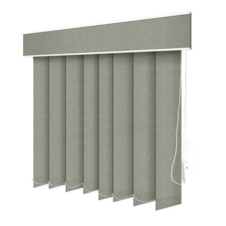
Ideal para controlar a entrada de luz solar, garantir privacidade e cobrir grandes vãos, como portas de vidro, varandas e janelas altas ou largas.
R$ 150,00 m²

Ideal para controlar a entrada de luz solar, garantir privacidade e cobrir grandes vãos, como portas de vidro, varandas e janelas altas ou largas.
R$ 150,00 m²
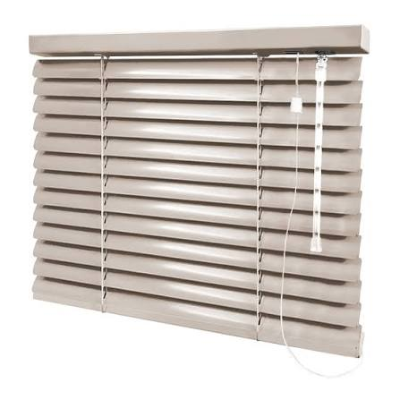
Persiana Horizontal feita em Alumínio, fácil instalação e fácil funcionamento. Prática para o dia a dia.
R$ 180,00 m²
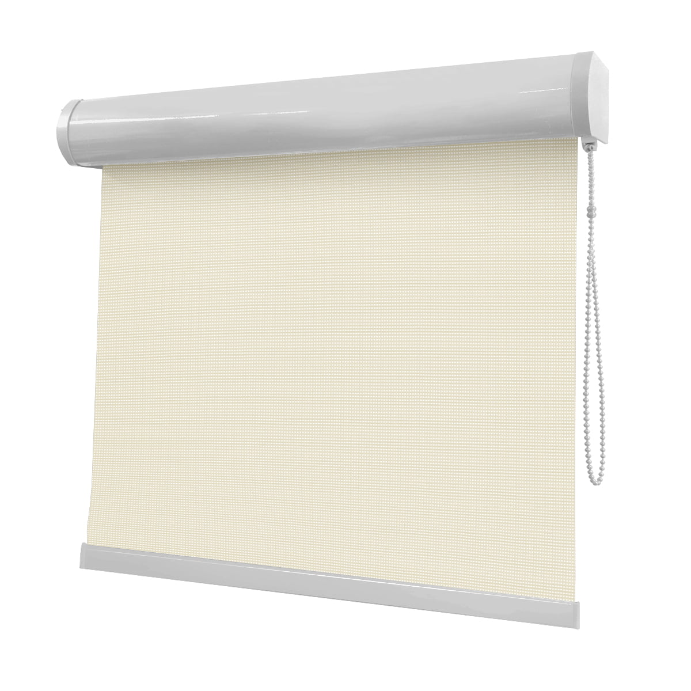
Proteção UV eficiente mantendo a visibilidade externa. Perfeita para varandas, sacadas e escritórios.
R$ 220,00 m²
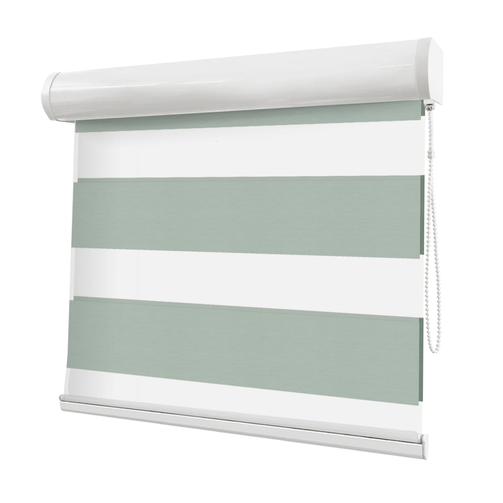
Combina tecidos translúcidos e opacos, permitindo excelente controle de luz e um visual extremamente moderno e elegante.
R$ 290,00 m²
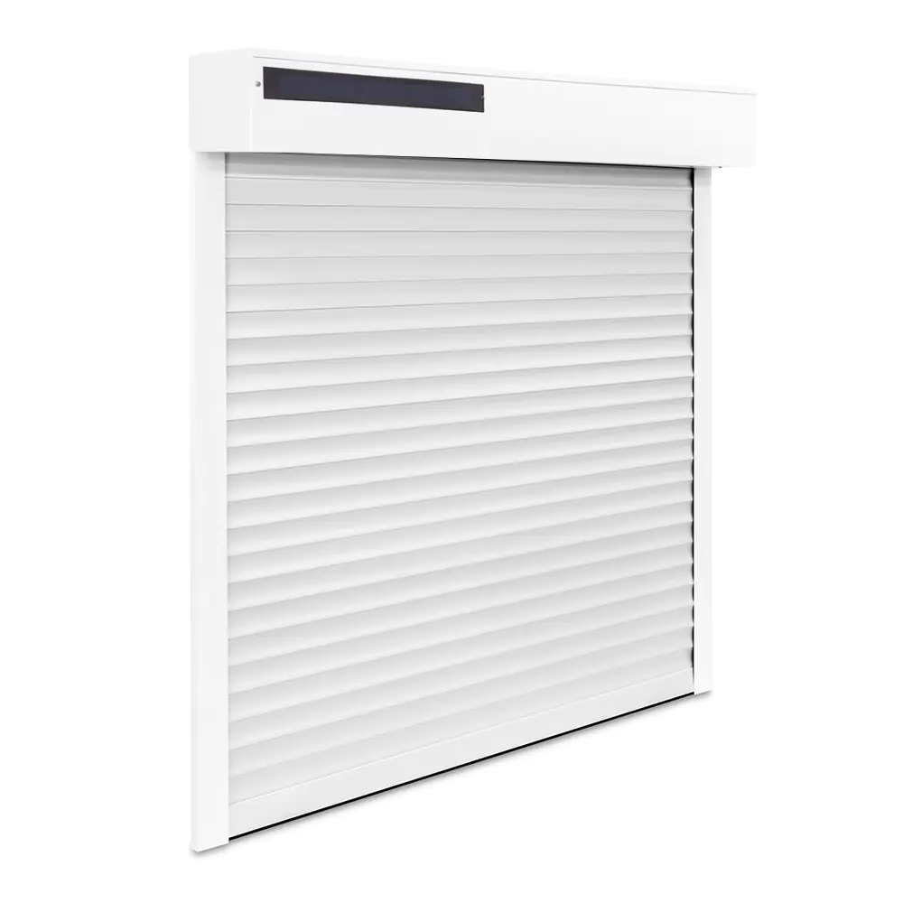
Conforto e alta tecnologia com acionamento por controle remoto ou assistente virtual. Ideal para automação residencial.
R$ 850,00 m²
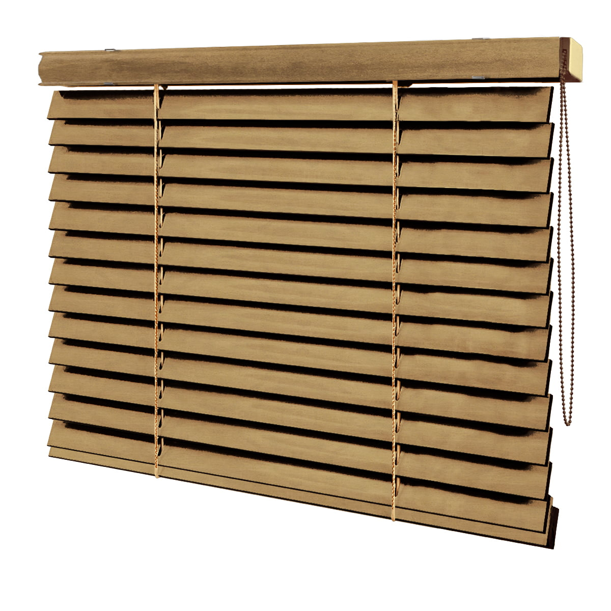
Elegância e sofisticação com lâminas de madeira natural de 50mm, perfeita para ambientes rústicos ou clássicos.
R$ 450,00 m²
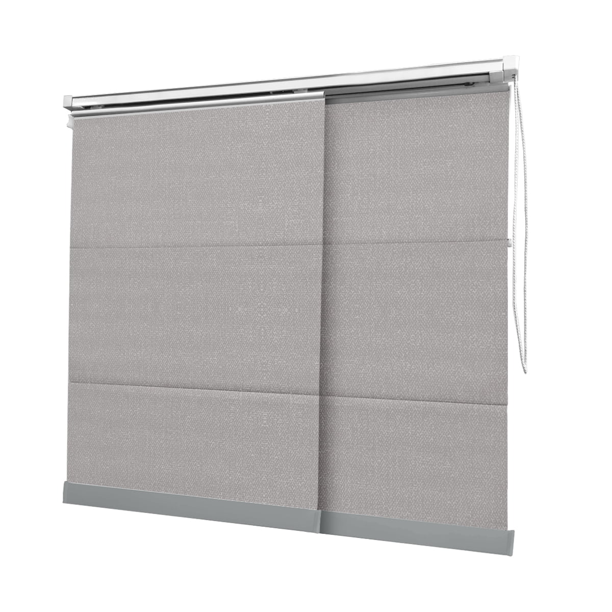
Composta por vias deslizantes, é a solução ideal para cobrir grandes extensões de janelas ou para dividir ambientes.
R$ 200,00 m²
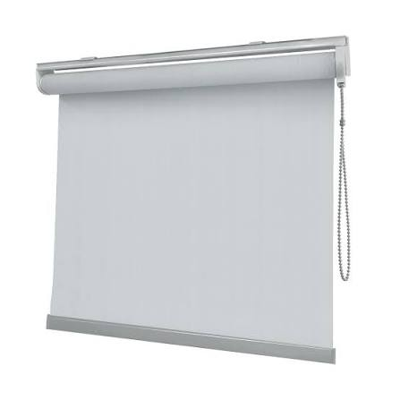
Design clean e prático. O tecido bloqueia 100% da luz e fica totalmente recolhido no topo quando aberta.
R$ 190,00 m²
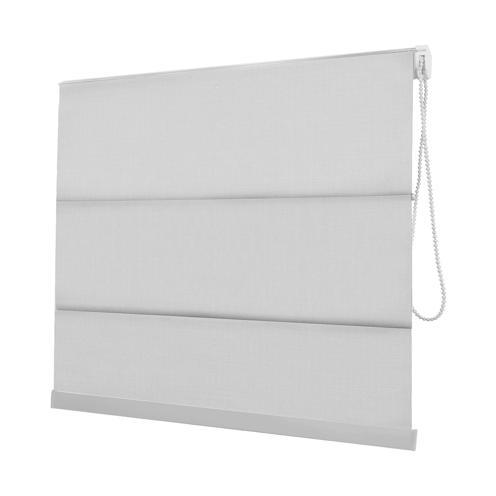
Charmosa e clássica, possui módulos alinhados que se dobram na vertical, criando um visual requintado e aconchegante.
R$ 250,00 m²
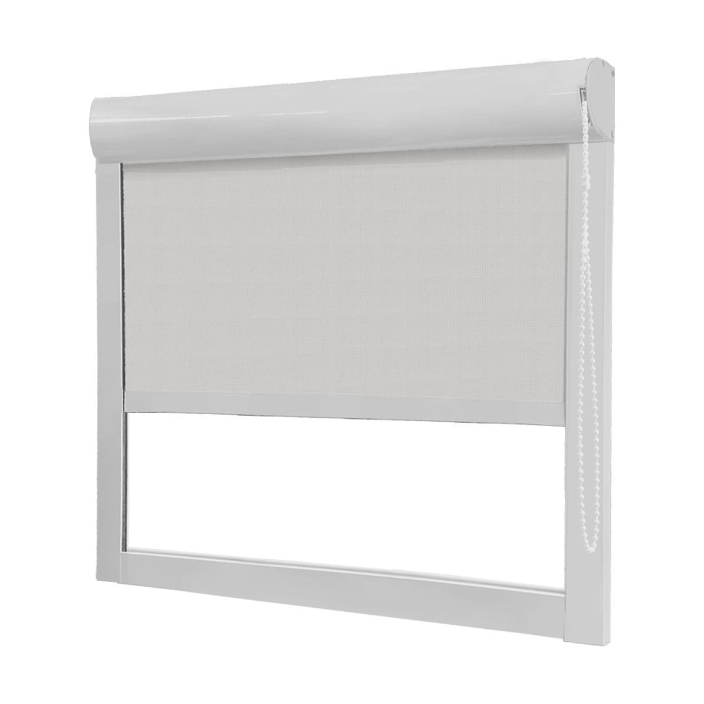
Acabamento com guias laterais feitas em alúminio, oferece uma 100% de privacidade contra a luminosidade.
R$ 350,00 unid.
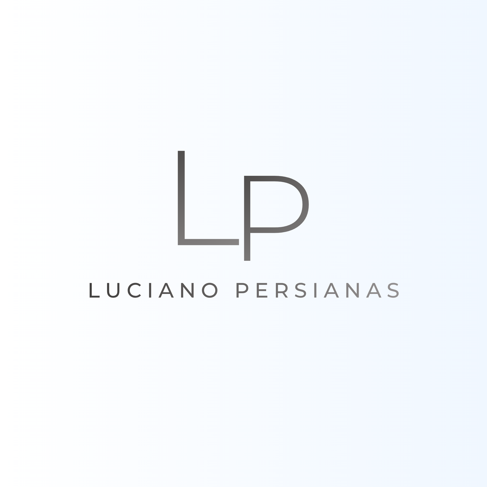
A empresa Luciano Persianas nasceu em 2009, em Florianópolis, com o propósito de levar conforto visual e sofisticação para lares e escritórios. Somos apaixonados por transformar ambientes. O que nos destaca no mercado é o nosso atendimento de ponta a ponta: você escolhe a persiana ou cortina ideal na nossa loja virtual, e nós cuidamos do resto. Oferecemos serviços especializados de colocação, manutenção e higienização, garantindo que suas persianas funcionem perfeitamente e pareçam sempre novas ao longo dos anos.